Media

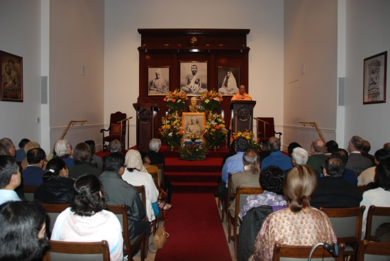
Swami Vivekananda's Birthday Service
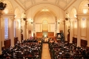
Memorial Service of Swami Adiswarananda

Sri Ramakrishna's Birthday Special Service

Special Reception and Service in Honor of Revered Swami Prameyanandaji
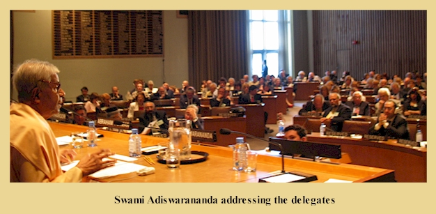


Swami Vivekananda's Birthday Service
February 2008
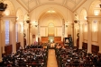
Memorial Service of Swami Adiswarananda
December 2007 (PDF file)
Sri Ramakrishna's Birthday Special Service
February 2007
Special Reception and Service in Honor of Revered Swami Prameyanandaji
May 2006
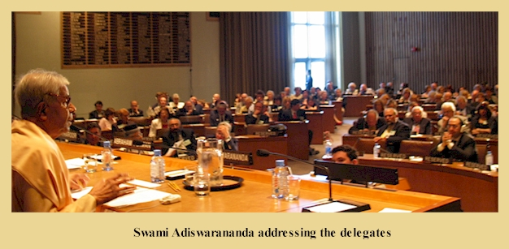
United Nations Conference on Unlearning Intolerance
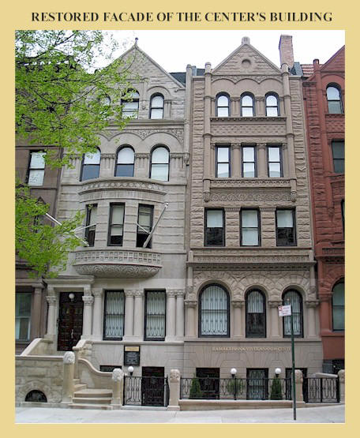Building Dedication
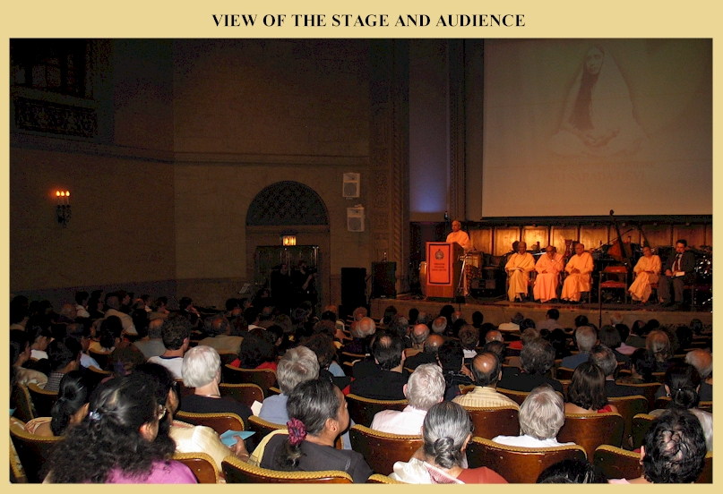150th Birthday of Holy Mother Sri Sarada Devi
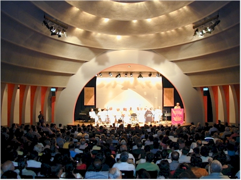Tribute to the Spiritual Oneness of Humanity
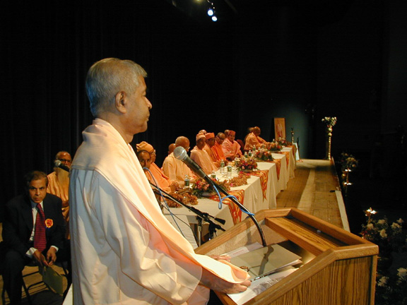Homage to the Legacy of Swami Vivekananda
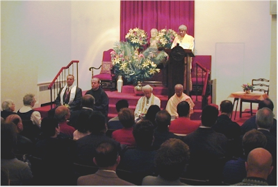Interfaith Service at the Center
125th birthday of Thousand Island Park
Centenary of the Ramakrishna Mission
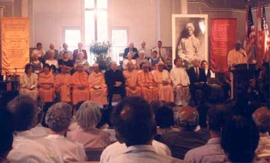Centenary of Swami Vivekananda at Thousand Island Park, NY
Centenary Celebration of Swami Vivekananda in America and the World's Parliament of Religions
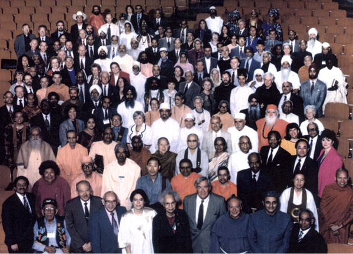Interfaith Activities 1987-93
50th Anniversary of the Ramakrishna-Vivekananda Center of New York
Swami Vivekananda Birth Centenary
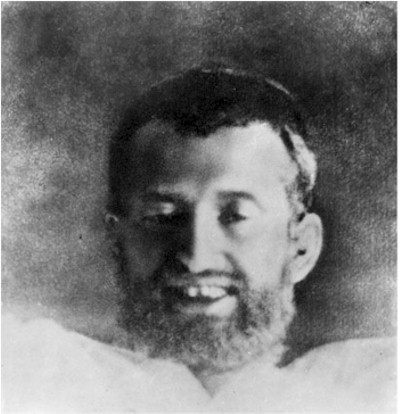Sri Ramakrishna Birth Centenary